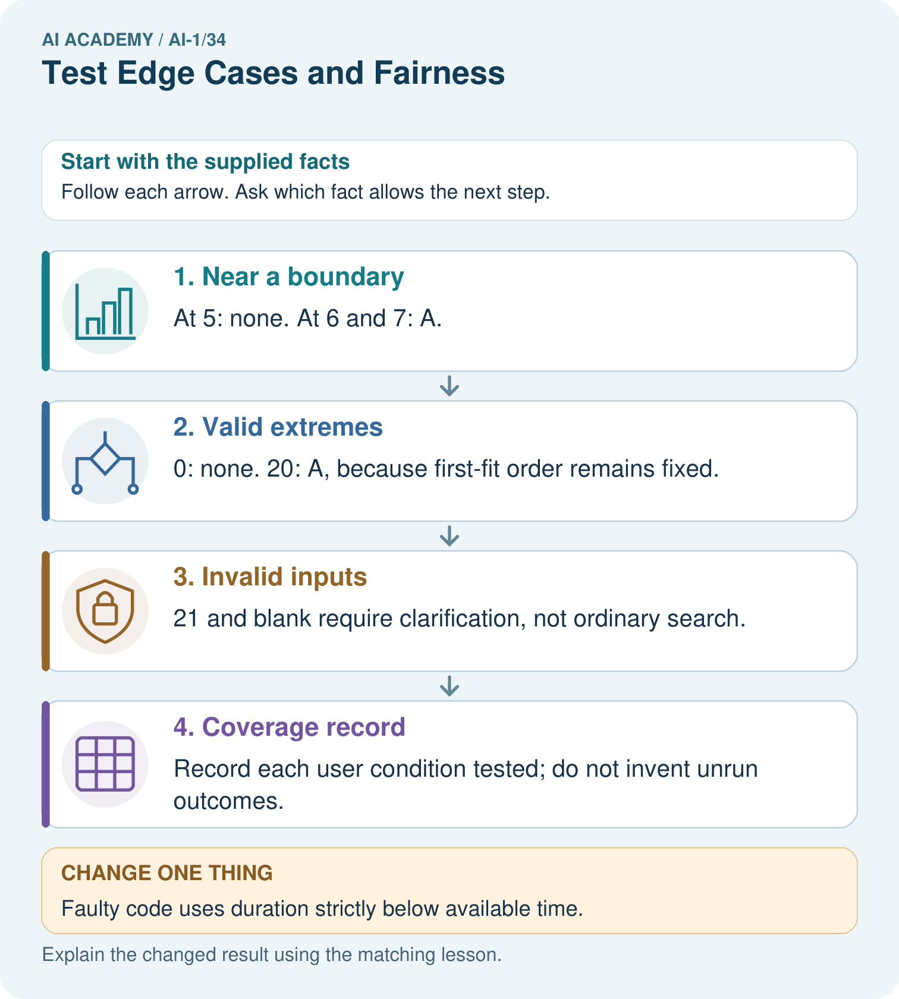
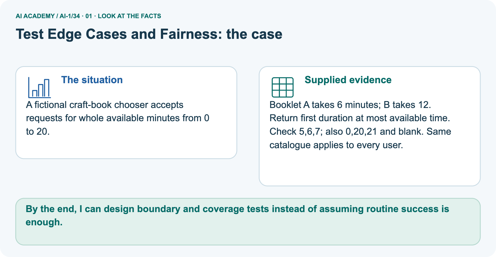
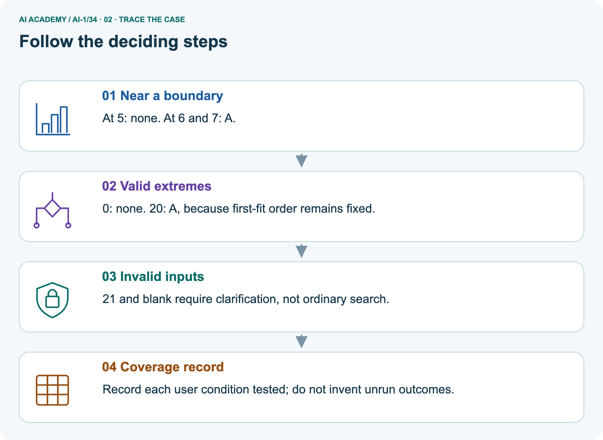
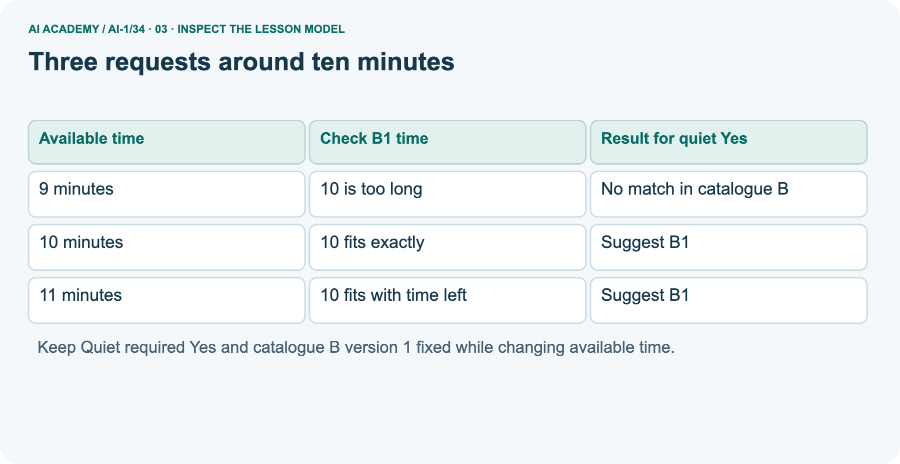
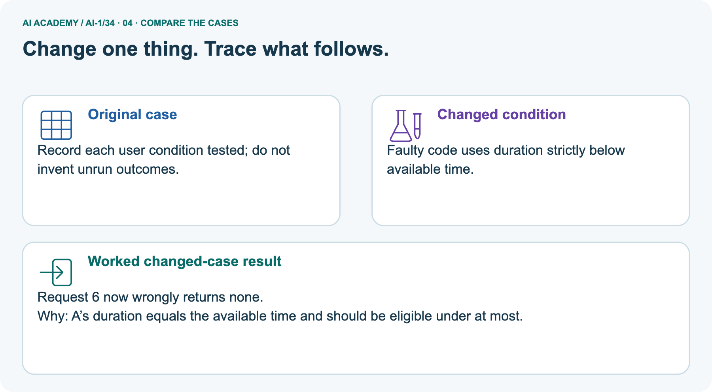
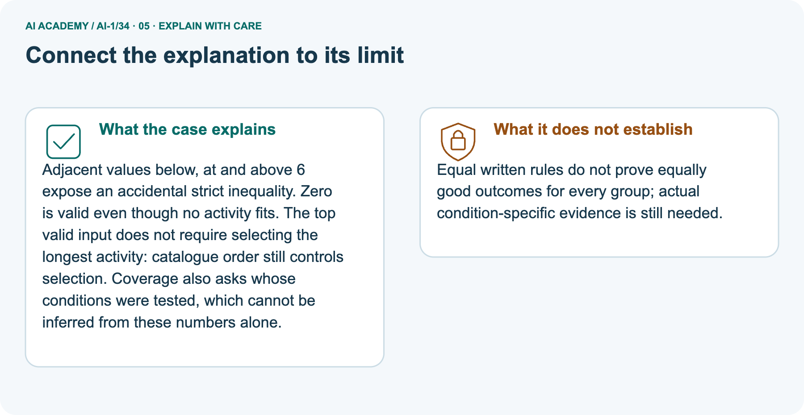
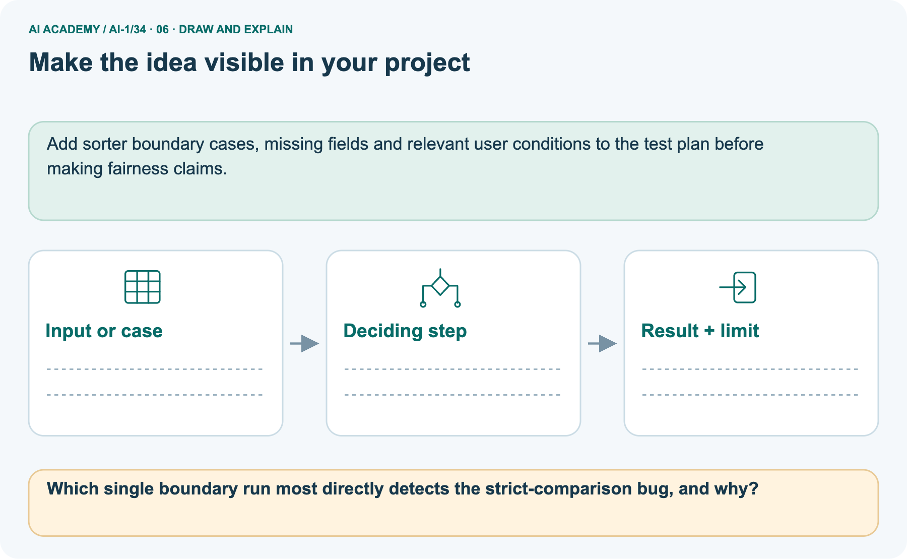

AI Academy · Level 1 · Grade 6 · Week 34 · Workbook
Test Edge Cases and Fairness
Learn to understand, design, build, test and explain AI systems responsibly.
Project: Helpful Classroom Sorter
THE CONNECTED WEEK
One connected edge-test and coverage record.
Probe equality, classify invalid input, run the third-row variation and audit the independent capacity boundary.
Keep one habit: Keep catalogue versions, expected search paths, actual traces and untested conditions visible.
Main lesson · Section 1
Recall: reconnect earlier ideas
Retrieve before opening notes.
Retrieve and explain
Try the recall before opening notes. Then use a different colour or a labelled second line to correct your explanation.
Without opening the old lesson, explain one key idea from Test Normal Cases. Give an example and a mistake that the idea helps you avoid.
Without opening the old lesson, explain one key idea from Design the Decision Process. Give an example and a mistake that the idea helps you avoid.
Without opening the old lesson, explain one key idea from Humans Set Boundaries. Give an example and a mistake that the idea helps you avoid.
Earlier wording, alternatives and picture transcripts
Test Normal Cases
Design the Decision Process
Humans Set Boundaries
Main lesson · Section 12
W1 · Isolate the time-equality boundary
Keep catalogue and quiet requirement fixed for adjacent values.
Your evidence record
Activity reference: B version 1 in order is B1 Bookmark drawing (10 min, quiet Yes), B2 Story circle (8 min, quiet No), B3 Pattern puzzle (12 min, quiet Yes), B4 Tower challenge (15 min, quiet No). Valid whole minutes 0–30; Quiet required Yes/No. Require time≤minutes AND (quiet not required OR activity quiet), select first fit, no match after all fail; clarify invalid/missing fields before search. P1 resets each run. S0 changes only ≤ to < for time. B version 2 changes only B1 duration to 20. B version 3 uses durations 20,18,17,15 for B1–B4, preserving order and quiet labels. Keep copies separately labelled.
For catalogue B version 1, write expected outputs and reasons for 9 Yes, 10 Yes and 11 Yes. Explain why keeping quiet and catalogue fixed helps examine the time boundary.
Predict what the faulty strictly-less-than S comparison does for 10 Yes.
Main lesson · Section 13
W2 · Check validation before search
Distinguish accepted zero from blank, fractional and invalid inputs.
Your evidence record
Classify these requests before searching: 0 Yes, 30 Yes, 31 Yes, blank minutes with Yes, 10.5 Yes, and 10 Maybe. Give each expected output or clarification and explain whether any candidate should be checked.
Why must zero not be treated like a blank?
Main lesson · Section 14
W3 · Run the labelled third-row variation
Use B version 2 consistently for both methods and expectations.
Your evidence record
Copy B version 1 and change only B1’s duration to 20, labelling it B version 2. Write the expected result for 12 Yes, then run your saved P1 and the manual baseline on this copy. Record the actual traces separately.
Explain why an answer checked against B version 1 would not be a fair judgement of this run.
Main lesson · Section 16
W5 · Audit the catalogue-version label
Use the supplied B version 3 reference and preserve what actually ran.
Your evidence record
For W5, B version 3 has durations B1=20, B2=18, B3=17, B4=15 minutes, with original quiet labels Yes,No,Yes,No and original order. B version 1 remains 10,8,12,15. Both use the same input and first-fit contract.
A team runs 15 No on B version 3, gets B4, but records “B version 1” and calls B4 correct. Explain the documentation error and the expected result under each catalogue.
State what must stay the same in a fair prototype-versus-baseline comparison and why a test not yet run cannot be counted as a pass.
Main lesson · Section 4
W4 · Find an independent capacity boundary
Keep one first attempt before hints or feedback.
Read and explain independently
A new equipment selector lists E1 first, capacity 4; E2 second, capacity 8. Valid group size is a whole number from 1 to 10.
Choose the first item whose capacity is at least the group size, or no match; invalid input needs clarification. A faulty version uses capacity strictly greater than group size.
Independently give correct and faulty outputs for groups 3, 4 and 5, then for group 8. Explain the defect and give the correct response to group 0. No booking occurs.
Keep a fair record
Attempt this case before feedback. Record any help. Earlier examples below are further practice; a case already practised with feedback cannot establish fresh transfer.
Earlier wording, alternatives and picture transcripts
Independent case: Find an independent capacity boundary
Main lesson · Section 9
Project · Keep the decision and its evidence
Add this week’s change to your existing project record.
Your evidence record
Expand the sorter test suite with edge, missing-data, and fairness cases plus expected safe behavior.
The project change and evidence I will keep
Main lesson · Section 17
Feedback · Repair and return
Keep the first attempt, the repair and a changed-case return.
Your evidence record
| Evidence | My record |
|---|---|
| Worked alone / hint / model | |
| First step I repaired and why | |
| New case checked later; date and result | |
| What I can now explain without notes | |
| One remaining question |
Revisit this idea with your teacher after a delay. Familiarity is different from explaining and using it on a changed case.
Main lesson · Section 10
Finish · Judge the evidence in your work
Point to work that supports your confidence level.
Your evidence record
- I can explain the mechanism.
- I can show evidence.
- I can handle a changed case.
- I can name a limit.
Mark each as not yet, with help or independently, and attach supporting work.
Teacher review ____________________ Next step ____________________
Reference bank and extra practice
Choose the reference that helps your next step.
Reference · Supported W2 record
Reference · Section 2
Reference · Supported W2 record
This is the same W2 attempt. Keep one response record.
Use this when helpful
Use W2: Check the validation boundary for Testing boundaries and varied conditions. Record the answer once; the lesson and workbook refer to the same attempt.
| Given inputs | Procedure I chose | Middle steps | Result and check |
|---|---|---|---|
Extra practice · Repair the explanation
Reference · Section 3
Extra practice · Repair the explanation
Explain the deciding fact before discussing the answer.
Use this when helpful
Use the worked case for Testing boundaries and varied conditions. Proposed explanation: “At the limit means outside the rule”. Decide whether this explanation is supported.
Point to the step or supplied fact that decides; explain your repair if needed.
Reference · Original learning target
Reference · Section 5
Reference · Original learning target
Use this target to inspect an explanation.
Use this when helpful
Before testing, define outcomes for clean paper, metal foil, mixed packaging and an unreadable card. The team later changes mixed packaging's expected result to match its sorter. Explain the evaluation problem.
Extra practice · A complete case
Reference · Section 6
Extra practice · A complete case
Try the question before checking the worked explanation.
Use this when helpful
A sorter handles clean paper but fails on crumpled paper and mixed packaging.
Design revealing tests.
Show your trace, calculation or evidence
Extra practice · A changed case
Reference · Section 7
Extra practice · A changed case
Keep this practice separate from the reserved independent attempt.
Use this when helpful
A sorter works on clear photos. Test a blurred pencil, a dim book and an unfamiliar lunch box. What makes these useful tests?
My practice answer and reason
Week 34 Test and reflect
Extra practice · Design a revealing test
Reference · Section 8
Extra practice · Design a revealing test
Predict before tracing or testing.
Use this when helpful
Create a changed input, boundary case or missing-information case. Write the expected answer or safe response before testing.
| Test record | My evidence |
|---|---|
| Changed input or condition | |
| Expected answer or fallback | |
| Observed result | |
| Why the result occurred |
Reference · Original target response space
Reference · Section 11
Reference · Original target response space
This teaching case is practice rather than a fresh assessment.
Use this when helpful
Before testing, define outcomes for clean paper, metal foil, mixed packaging and an unreadable card. The team later changes mixed packaging's expected result to match its sorter. Explain the evaluation problem.
Record support used: none, hint or teacher explanation.
Reference · Independent-case response copy
Reference · Section 15
Reference · Independent-case response copy
This duplicates W4. Reuse the same first-attempt record.
Use this when helpful
A new equipment selector lists E1 first, capacity 4; E2 second, capacity 8. Valid group size is a whole number from 1 to 10.
Choose the first item whose capacity is at least the group size, or no match; invalid input needs clarification. A faulty version uses capacity strictly greater than group size.
Independently give correct and faulty outputs for groups 3, 4 and 5, then for group 8. Explain the defect and give the correct response to group 0. No booking occurs.
Extra practice · Use the worked picture
Reference · Section 18
Extra practice · Use the worked picture
Keep the explanation and the support you used.
Use this when helpful
A fictional craft-book chooser accepts requests for whole available minutes from 0 to 20.
Booklet A takes 6 minutes; B takes 12. Return first duration at most available time.
Check 5,6,7; also 0,20,21 and blank. Same catalogue applies to every user.



Which single boundary run most directly detects the strict-comparison bug, and why?
Support used: alone / hint / worked example. This record is practice evidence.
Project connection: Add sorter boundary cases, missing fields and relevant user conditions to the test plan before making fairness claims.
Reference · Project portfolio record
Reference · Section 19
Reference · Project portfolio record
Extend your main project response when helpful.
Use this when helpful
Project: Helpful Classroom Sorter
Current milestone: Present and defend. Demonstrate the system, explain one failure and justify the next improvement with evidence.
Add sorter boundary cases, missing fields and relevant user conditions to the test plan before making fairness claims.
| Evidence to keep | My record |
|---|---|
| This week’s input and deciding step | |
| Prediction and actual result (or labelled paper trace) | |
| One change since the previous checkpoint and why | |
| One error or limit and the next test |
Extra practice: pictures, repair and feedback
Reference · Section 20
Extra practice: pictures, repair and feedback
Attempt each question before opening its explanation. Use one browser or paper copy.
First supported question
A fictional craft-book chooser accepts requests for whole available minutes from 0 to 20.
Which labelled step matches this detail? Record each user condition tested; do not invent unrun outcomes.
1. Near a boundary
2. Invalid inputs
3. Coverage record
4. Valid extremes
Hint if needed: Read the steps in the pictorial case. Match the supplied detail to the stage that performs or records it.
Practice 1: explain the deciding evidence
Check the first explanation
After your attempt, compare with the supported explanation: Coverage record Record each user condition tested; do not invent unrun outcomes. Adjacent values below, at and above 6 expose an accidental strict inequality.
Zero is valid even though no activity fits. The top valid input does not require selecting the longest activity: catalogue order still controls selection.
Coverage also asks whose conditions were tested, which cannot be inferred from these numbers alone.
Changed-case question
Changed-case practice: Faulty code uses duration strictly below available time. Which conclusion is supported by the supplied facts?
1. This one example guarantees correct results for every future input.
2. We can decide the result without examining the changed input or the procedure.
3. Request 6 now wrongly returns none.
Hint if needed: Use the changed condition and the deciding step in the pictorial trace. The answer must say what follows from those facts.
Practice 2: explain the deciding evidence
Check the changed case
After your attempt, compare with the supported explanation: Request 6 now wrongly returns none. A’s duration equals the available time and should be eligible under at most.
Repair and save your work
Review Test Normal Cases (ai-1/33). Goal: Plan routine cases with expected results derived from the requirements. Short practice: Why is none correct for 8 but incorrect for 6? Use both capacity cards..
Return to this week and explain what you changed.
Review Design the Decision Process (ai-1/31). Goal: Design a decision process that covers valid, invalid and no-match requests.
Short practice: Where does the first original rejection occur, and why is K3 not originally selected?. Return to this week and explain what you changed.
Review Humans Set Boundaries (ai-1/28). Goal: Distinguish a system’s capability, the correctness of its output and permission to take an action. Short practice: Which original proposal is authorised?
Why do the other two need separate approval?. Return to this week and explain what you changed.
Use Download completed work in the hosted lesson to export your answers, reflections, practice feedback and code-run evidence. Open the HTML copy to read or print it.
Drafts stay in this browser when storage is available; clear drafts on a shared device.
Earlier wording, alternatives and picture transcripts
Use this supported practice once, in the browser or on paper. Keep the reserved independent assessment for a separate first attempt before teacher feedback.
Repair a missing building block
Keep your completed work
Reference · Six-picture response sheets
Reference · Section 21
Reference · Six-picture response sheets
Choose the image that helps rather than repeating all six.
01. Test Edge Cases and Fairness: the case



A fictional craft-book chooser accepts requests for whole available minutes from 0 to 20. Supplied facts: Booklet A takes 6 minutes; B takes 12. Return first duration at most available time.
Check 5,6,7; also 0,20,21 and blank. Same catalogue applies to every user.
Point to the given fact that matters most. Explain why it matters.
02. Follow the deciding steps



Near a boundary: At 5: none.
At 6 and 7: A. → Valid extremes: 0: none. 20: A, because first-fit order remains fixed. → Invalid inputs: 21 and blank require clarification, not ordinary search. → Coverage record: Record each user condition tested; do not invent unrun outcomes.
Point to each numbered stage and explain which recorded input it uses.
03. Three requests around ten minutes



Three requests around ten minutes. 9 minutes | 10 is too long | No match in catalogue B. 10 minutes | 10 fits exactly | Suggest B1. 11 minutes | 10 fits with time left | Suggest B1
Read the labels and values. Explain the relationship the model shows.
04. Change one thing. Trace what follows.



Original case: Record each user condition tested; do not invent unrun outcomes. Changed condition: Faulty code uses duration strictly below available time. Expected result: Request 6 now wrongly returns none.
Reason: A’s duration equals the available time and should be eligible under at most.
Predict before checking the worked changed-case result. Name what changed and what the supplied facts allow you to conclude.
05. Connect the explanation to its limit



Adjacent values below, at and above 6 expose an accidental strict inequality. Zero is valid even though no activity fits.
The top valid input does not require selecting the longest activity: catalogue order still controls selection. Coverage also asks whose conditions were tested, which cannot be inferred from these numbers alone.
Limit: Equal written rules do not prove equally good outcomes for every group; actual condition-specific evidence is still needed.
Explain the case, then point to a limit on the claim.
06. Make the idea visible in your project



Add sorter boundary cases, missing fields and relevant user conditions to the test plan before making fairness claims. Draw your input, deciding step, result and limit.
Supported question: Which single boundary run most directly detects the strict-comparison bug, and why?
Draw your project trace and justify the deciding step using evidence.